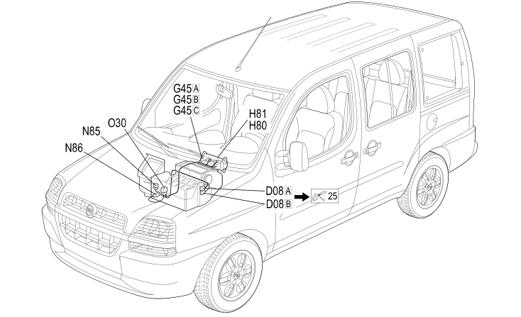

65 AIR CONDITIONING
- Path
- Electrical equipment > 2 WIRING > 65 AIR CONDITIONING
- Kind
- wiring harness
- Applies to
- engines: 1.2 8v, 1.6 16v, 1.9 JTD 8V, 1.9 DIESEL; all production periods
- Interactive page
- https://sloeber94.github.io/elrnDB-fDbl/en/#/223004112
Applies to: engines: 1.2 8v, 1.6 16v, 1.9 JTD 8V, 1.9 DIESEL; all production periods

Topics that link to this page (13)
- D008B FRONT/AIR CONDITIONING - HEATER COUPLING (AIR CONDITIONING)
- D8B FRONT/AIR CONDITIONING - HEATER COUPLING ( AIR CONDITIONING )
- G045A AIR CONDITIONING/HEATER CONTROLS LIGHT (AIR CONDITIONING)
- G045B AIR CONDITIONING/HEATER CONTROLS LIGHT (AIR CONDITIONING)
- G045C AIR CONDITIONING/HEATER CONTROLS LIGHT (AIR CONDITIONING)
- G45A AIR CONDITIONING/HEATER CONTROLS LIGHT ( AIR CONDITIONING )
- G45B AIR CONDITIONING/HEATER CONTROLS LIGHT ( AIR CONDITIONING )
- G45C AIR CONDITIONING/HEATER CONTROLS LIGHT ( AIR CONDITIONING )
- H080 CLIMATE CONTROL SYSTEM CONTROLS (AIR CONDITIONING)
- H80 CLIMATE CONTROL CONTROLS ( AIR CONDITIONING )
- H081 CLIMATE CONTROL FAN CONTROL (AIR CONDITIONING)
- H81 CLIMATE CONTROL FAN CONTROL ( AIR CONDITIONING )
- N86 ELECTRONIC THERMOSTAT ( AIR CONDITIONING )